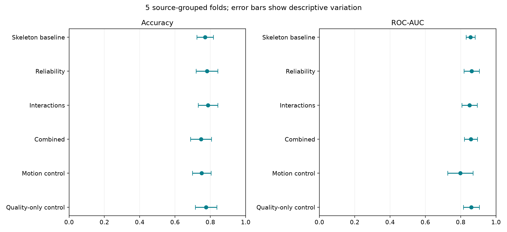

2026-11-15
Repeated crowd violence evaluation
245 unique clips, 204 source groups, 5 outer folds. 4 TCN variants each use 3 training seeds. Each linear control is fitted once per fold.
The TCN uses the explicit pose-coverage scalar.
Derived feature schema: coco17-continuous-hip-offset-v2.
These are exploratory results on previously inspected videos. Grouping and sampled source review reduce known overlap, but do not establish a fresh untouched benchmark or independently validated labels. Variation across folds and seeds is descriptive, not a confidence interval or proof of a significant difference.
Frozen source review: All 245 clips fully decoded; source overlap reviewed in densely sampled evidence for 20 candidate pairs. Violence labels were not independently re-annotated.
Mean results across fold runs
| Model | Fits | Accuracy | Macro-F1 | ROC-AUC |
|---|---|---|---|---|
| Skeleton baseline | 15 | 77.0% +/- 4.7% | 0.765 +/- 0.052 | 0.856 +/- 0.026 |
| Reliability | 15 | 78.1% +/- 6.1% | 0.777 +/- 0.065 | 0.862 +/- 0.044 |
| Interactions | 15 | 78.6% +/- 5.6% | 0.782 +/- 0.061 | 0.851 +/- 0.043 |
| Combined | 15 | 74.7% +/- 5.9% | 0.736 +/- 0.072 | 0.858 +/- 0.037 |
| Motion control | 5 | 75.1% +/- 5.3% | 0.748 +/- 0.053 | 0.798 +/- 0.072 |
| Quality-only control | 5 | 77.6% +/- 6.1% | 0.773 +/- 0.064 | 0.861 +/- 0.045 |

All clips evaluated once per model and seed
Each row pools classification decisions for all 245 clips using the threshold selected on that fold's validation data. ROC-AUC remains reported within folds because score calibration differs across trained classifiers.
| Model | Seed | Clips | Accuracy | Macro-F1 | Violent precision | Violent recall |
|---|---|---|---|---|---|---|
| Skeleton baseline | 42 | 245 | 76.3% | 0.763 | 0.764 | 0.764 |
| Skeleton baseline | 123 | 245 | 78.0% | 0.779 | 0.759 | 0.821 |
| Skeleton baseline | 2026 | 245 | 76.7% | 0.765 | 0.830 | 0.675 |
| Reliability | 42 | 245 | 79.2% | 0.792 | 0.805 | 0.772 |
| Reliability | 123 | 245 | 79.6% | 0.794 | 0.861 | 0.707 |
| Reliability | 2026 | 245 | 75.5% | 0.755 | 0.769 | 0.732 |
| Interactions | 42 | 245 | 80.4% | 0.804 | 0.805 | 0.805 |
| Interactions | 123 | 245 | 79.2% | 0.792 | 0.800 | 0.780 |
| Interactions | 2026 | 245 | 76.3% | 0.763 | 0.773 | 0.748 |
| Combined | 42 | 245 | 73.1% | 0.730 | 0.724 | 0.748 |
| Combined | 123 | 245 | 75.9% | 0.758 | 0.729 | 0.829 |
| Combined | 2026 | 245 | 75.1% | 0.751 | 0.750 | 0.756 |
| Motion control | deterministic | 245 | 75.1% | 0.749 | 0.712 | 0.846 |
| Quality-only control | deterministic | 245 | 77.6% | 0.775 | 0.788 | 0.756 |
Per-fold results
| Model | Fold | Seed | Accuracy | Macro-F1 | ROC-AUC |
|---|---|---|---|---|---|
| Skeleton baseline | 1 | 42 | 73.5% | 0.727 | 0.820 |
| Skeleton baseline | 1 | 123 | 75.5% | 0.750 | 0.817 |
| Skeleton baseline | 1 | 2026 | 73.5% | 0.718 | 0.852 |
| Skeleton baseline | 2 | 42 | 69.4% | 0.667 | 0.858 |
| Skeleton baseline | 2 | 123 | 81.6% | 0.815 | 0.867 |
| Skeleton baseline | 2 | 2026 | 81.6% | 0.816 | 0.878 |
| Skeleton baseline | 3 | 42 | 77.6% | 0.775 | 0.852 |
| Skeleton baseline | 3 | 123 | 81.6% | 0.816 | 0.847 |
| Skeleton baseline | 3 | 2026 | 79.6% | 0.796 | 0.858 |
| Skeleton baseline | 4 | 42 | 85.7% | 0.857 | 0.913 |
| Skeleton baseline | 4 | 123 | 79.6% | 0.795 | 0.863 |
| Skeleton baseline | 4 | 2026 | 77.6% | 0.769 | 0.890 |
| Skeleton baseline | 5 | 42 | 75.5% | 0.750 | 0.860 |
| Skeleton baseline | 5 | 123 | 71.4% | 0.713 | 0.828 |
| Skeleton baseline | 5 | 2026 | 71.4% | 0.713 | 0.835 |
| Reliability | 1 | 42 | 73.5% | 0.731 | 0.848 |
| Reliability | 1 | 123 | 69.4% | 0.674 | 0.812 |
| Reliability | 1 | 2026 | 65.3% | 0.644 | 0.798 |
| Reliability | 2 | 42 | 81.6% | 0.816 | 0.848 |
| Reliability | 2 | 123 | 77.6% | 0.774 | 0.832 |
| Reliability | 2 | 2026 | 75.5% | 0.753 | 0.845 |
| Reliability | 3 | 42 | 81.6% | 0.816 | 0.848 |
| Reliability | 3 | 123 | 81.6% | 0.815 | 0.868 |
| Reliability | 3 | 2026 | 75.5% | 0.755 | 0.857 |
| Reliability | 4 | 42 | 81.6% | 0.814 | 0.915 |
| Reliability | 4 | 123 | 89.8% | 0.898 | 0.958 |
| Reliability | 4 | 2026 | 85.7% | 0.855 | 0.938 |
| Reliability | 5 | 42 | 77.6% | 0.772 | 0.867 |
| Reliability | 5 | 123 | 79.6% | 0.789 | 0.852 |
| Reliability | 5 | 2026 | 75.5% | 0.754 | 0.843 |
| Interactions | 1 | 42 | 75.5% | 0.750 | 0.797 |
| Interactions | 1 | 123 | 71.4% | 0.704 | 0.808 |
| Interactions | 1 | 2026 | 67.3% | 0.649 | 0.768 |
| Interactions | 2 | 42 | 77.6% | 0.769 | 0.862 |
| Interactions | 2 | 123 | 77.6% | 0.769 | 0.823 |
| Interactions | 2 | 2026 | 73.5% | 0.723 | 0.812 |
| Interactions | 3 | 42 | 85.7% | 0.857 | 0.892 |
| Interactions | 3 | 123 | 79.6% | 0.795 | 0.860 |
| Interactions | 3 | 2026 | 79.6% | 0.795 | 0.848 |
| Interactions | 4 | 42 | 85.7% | 0.857 | 0.918 |
| Interactions | 4 | 123 | 87.8% | 0.877 | 0.903 |
| Interactions | 4 | 2026 | 83.7% | 0.837 | 0.908 |
| Interactions | 5 | 42 | 77.6% | 0.775 | 0.847 |
| Interactions | 5 | 123 | 79.6% | 0.796 | 0.857 |
| Interactions | 5 | 2026 | 77.6% | 0.775 | 0.855 |
| Combined | 1 | 42 | 71.4% | 0.693 | 0.825 |
| Combined | 1 | 123 | 75.5% | 0.750 | 0.812 |
| Combined | 1 | 2026 | 73.5% | 0.723 | 0.837 |
| Combined | 2 | 42 | 63.3% | 0.582 | 0.815 |
| Combined | 2 | 123 | 71.4% | 0.699 | 0.847 |
| Combined | 2 | 2026 | 67.3% | 0.640 | 0.872 |
| Combined | 3 | 42 | 79.6% | 0.796 | 0.870 |
| Combined | 3 | 123 | 77.6% | 0.775 | 0.867 |
| Combined | 3 | 2026 | 83.7% | 0.836 | 0.860 |
| Combined | 4 | 42 | 77.6% | 0.774 | 0.892 |
| Combined | 4 | 123 | 85.7% | 0.857 | 0.947 |
| Combined | 4 | 2026 | 77.6% | 0.775 | 0.908 |
| Combined | 5 | 42 | 73.5% | 0.733 | 0.848 |
| Combined | 5 | 123 | 69.4% | 0.674 | 0.833 |
| Combined | 5 | 2026 | 73.5% | 0.734 | 0.835 |
| Motion control | 1 | deterministic | 77.6% | 0.775 | 0.848 |
| Motion control | 2 | deterministic | 73.5% | 0.727 | 0.767 |
| Motion control | 3 | deterministic | 81.6% | 0.815 | 0.862 |
| Motion control | 4 | deterministic | 67.3% | 0.672 | 0.687 |
| Motion control | 5 | deterministic | 75.5% | 0.750 | 0.825 |
| Quality-only control | 1 | deterministic | 77.6% | 0.775 | 0.828 |
| Quality-only control | 2 | deterministic | 79.6% | 0.794 | 0.877 |
| Quality-only control | 3 | deterministic | 83.7% | 0.836 | 0.912 |
| Quality-only control | 4 | deterministic | 67.3% | 0.667 | 0.800 |
| Quality-only control | 5 | deterministic | 79.6% | 0.795 | 0.886 |
Verification and remaining work
All 70 saved fits reproduce their predictions and decisions. Training-only normalization, validation-selected thresholds and frozen inputs were checked. TCN score reproduction used cpu. These experiments use cached features and do not measure full-pipeline latency.
Next: inspect detection-cue dependence and high-motion failures, add a stronger RGB reference, and evaluate transfer to suitable uninspected RWF-2000 videos.
Research notes | Fold summary | Pooled decisions | Per-clip predictions | Verification | Frozen protocol